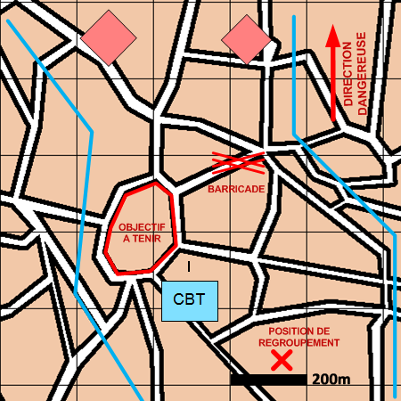

NIVEAU :Automate
ARME :Melee
MISSION :Tenir
Objectif principal
- Occuper
- Détruire / Neutraliser
Modalités d'exécution
-
Installation du dispositif :
- Le PC se poste sur la position de regroupement si précisée ;
- Le GEN prépare le terrain (construction d'obstacles) ;
- Les unités de mêlée tiennent les objectifs ;
- L'échelon d'éclairage surveille dans la direction dangereuse ;
- Les appuis feu appuient la mêlée.
-
La mêlée tient même si le rapport de force est très défavorable.
Schéma de modélisation

Paramètres obligatoires
Fuseau : Zone de responsabilité.
Direction Dangereuse : Orientation privilégiée des capteurs.
Objectifs
Points :
Points à rejoindre et à défendre.
Zones :
Zones à rejoindre et à défendre.
Blocs urbains :
Blocs Urbains à rejoindre et à défendre.
Paramètres optionnels
Nombre d'échelons (1 par défaut)
Obstacles: Obstacles à construire.
Valoriser obstacles: Indique si on valorise les obstacles après construction.
Point de regroupement